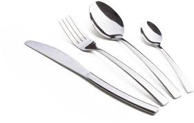

Vajon miért csinálhatták? Tényleg csak az Április elsejei poén állt az egész mögött vagy valami nemesebb indok? Vajon igaz amit mondtak? Április elsején rejtélyesen eltűntek az evőeszközök a menzáról, még az igazgató úr is írt egy levelet az iskolapolgárra hogy akik megtaláljak a tetteseket, azok egy igazgatói dicséretben részesülne, és ismerni fogja őket. Erre az üzenetre az egész iskola elkezdettt nyomozni. Két nap múlva megtalálták a "rablókat" akiket a végzős D osztály két tanulója talált meg. A neveiket le sem kell írnunk mert már biztos mindenki hallott róluk. Főleg az elmúlt 2 hónapbban. A tettesek megtalálása után mindenki róluk beszélt. Elvileg azért lopták el mert elegük lett abból, hogy mindig sorba kellett állni az ebédért, és erre most könnyű volt ráhúzni azt a részt hogy ez csak egy Április elsejei poénnak tűnjön. Mindenesetre a lopásban résztvevő pár diák a 12.A osztály tanulói voltak.
